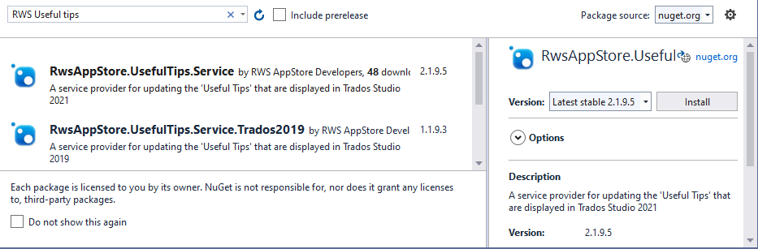

How to implement the Studio Useful Tips service
The RwsAppStore.UsefulTips.Service is a service provider for updating the Useful Tips that are displayed in Trados Studio.
Add the Studio Useful Tips service to your project
You can add the nuget package to your project via the package manager user interface or console.
Package Manager UI
- In Solution Explorer, right-click References and choose Manage NuGet Packages.
- Select nuget.org as the Package source.
- Search for
RwsAppStore.UsefulTips.Servicefrom the Browse tab. - Select the package from the list and click Install.
- Accept any license prompts to finnish the installation. 
Package Manager Console
- Alternatively, go to Tools > NuGet Package Manager > Package Manager Console.
- In the Package Manager Console, enter the command:
Install-Package RwsAppStore.UsefulTips.Service -Version 3.0.0.8
Remarks
The Useful Tips service first checks for already existing tips before attempting to add new ones. If tips exist in the Useful Tips collection, only those identified as new are added.
If Trados Studio was not launched as administrator, the user may receive a message from the service asking to elevate the user rights before updating the Useful Tips collection in Trados Studio with the new tips from the plugin.
Note
Administrator rights are required, as the local tip files that manage the Useful Tips collection in Trados Studio reside in the Trados Studio installation directory. Only a user with administrator access rights can modify files from the installation directory.
Settings
The Useful Tips service enables the user to hide the message that is displayed when new Tips are available for installation, by selecting the option 'Don't show this message again'.
This is necessary if the user did not update the Useful Tips collection when prompted in Trados Studio; in this case, the decision from the user will be persisted and no further attempt is made to add those tips for that version of Trados Studio.

Q: Where can I locate the Settings.xml files of the Useful Tips service?
A: The settings file is located in the users roaming directory:
C:\Users\[username]\AppData\Roaming\RWS Community\UsefulTipsService\Settings
Note
Replace [username] with your OS login account name
Q: How can the user add tips from the plugin to the Useful Tips collection in Trados Studio if they previously opted-out to adding them?
A: The decision taken by the user to prevent the prompt message from being displayed is persisted in the Settings.xml file. To manually update this setting, simply open the Settings.xml file in a text editor, search for the entry associated with the application and change the boolean value associated with the HidePromptMessage property to 'false'.
<Settings>
<Records>
<Record>
<ApplicationName>Application Name 1</ApplicationName>
<TradosStudioVersion>16</TradosStudioVersion>
<HidePromptMessage>false</HidePromptMessage>
</Record>
<Record>
<ApplicationName>Application Name 2</ApplicationName>
<TradosStudioVersion>15</TradosStudioVersion>
<HidePromptMessage>true</HidePromptMessage>
</Record>
<Record>
<ApplicationName>Application Name 2</ApplicationName>
<TradosStudioVersion>16</TradosStudioVersion>
<HidePromptMessage>false</HidePromptMessage>
</Record>
</Records>
</Settings>
Sample Implementation
The following example creates an instance of the TipsProvider and adds a new Tip for a single language (i.e. en).
namespace RwsAppStore.Example.Services
{
public class UsefulTipsService
{
public void AddUsefulTips()
{
var pathInfo = new PathInfo("[Plugin Name]", "16");
var tipsProvider = new TipsProvider(pathInfo);
var imported = tipsProvider.ImportTips(GetImportTips(), true);
Console.WriteLine($"Imported {imported} useful tips.");
}
private static ImportTips GetImportTips()
{
var tipLanguage = new TipLanguage
{
LanguageId = "en",
Tips = new List<Tip>
{
new Tip
{
Category = "[A category to group the tips]",
Context = "[The Id of the plugin View]",
Title = "My Tip",
Description = "This is an awesome Tip",
Icon = "[Relative path to the icon]",
DescriptionImage = "[Relative path to the image file]",
Content = "[Relative path to the markdown File]",
}
},
Resources = new List<ResourceFile>
{
new ResourceFile {FullPath = "[DescriptionImage Full Path]",
RelativePath = "[Relative Path]"},
new ResourceFile {FullPath = "[Content Full Path]",
RelativePath = "[Relative Path]"},
new ResourceFile {FullPath = "[Icon Full Path]",
RelativePath = "[Relative Path]"}
}
};
var importTips = new ImportTips
{
TipLanguages = new List<TipLanguage> { tipLanguage }
};
return importTips;
}
}
}
API
/// <summary>
/// The supported UI languages for Trados Studio;
/// supported values [de, en, es, fr, it, ja, ko, ru, zh]</summary>
public List<string> SupportedLanguages {get;}
/// <summary>
/// Get or Set the 'HidePromptMessage' value for the plugin.
/// Setting this value to false will prevent the user from receiving
/// a prompt message to install the useful tips.
/// </summary>
public bool HidePromptMessage { get; set;}
/// <summary>
/// Import Tips to the 'Useful Tips' collection in Trados Studio
/// </summary>
/// <param name="importTips">A list of Tips that you would like to
/// add to the 'Useful Tips' collection in Trados Studio</param>
/// <param name="overwrite">Overwrite existing tips</param>
/// <param name="runasAdmin">
/// Elevate the user rights to admin; default: true. If the app
/// environment is not running with Admin rights, then the user will
/// receive a message from the User Account Control (UAC) in Windows
/// </param>
/// <returns>The number of Tips added to 'Useful Tips' collection
/// in Trados Studio</returns>
public int ImportTips(ImportTips importTips, bool overwrite,
bool runasAdmin = true)
/// <summary>
/// Remove Tips from the 'Useful Tips' collection in Trados Studio
/// </summary>
/// <param name="removeTips">
/// A list of Tips that you would like to remove from the 'Useful Tips'
/// collection. </param>
/// <param name="runasAdmin">
/// Elevate the user rights to admin; default: true. If the app
/// environment is not running with Admin rights, then the user will
/// receive a message from the User Account Control (UAC) in Windows
/// </param>
/// <returns>The number of Tips removed from the collection</returns>
public int RemoveTips(RemoveTips removeTips, bool runasAdmin = true)
/// <summary>
/// Get all Tips from the 'Useful Tips' collection in Trados Studio
/// </summary>
/// <returns>A list of Tips</returns>
public List<TipLanguage> GetStudioTips()
Models
public class TipLanguage
{
/// <summary>
/// The UI language Id supported by Trados Studio;
/// supported values [de, en, es, fr, it, ja, ko, ru, zh]
/// </summary>
public string LanguageId { get; set; }
/// <summary>
/// Tips available in the current language context
/// </summary>
public List<Tip> Tips { get; set; }
/// <summary>
/// The resource files that are referenced in the tips xml
/// and content markup files
/// </summary>
public List<ResourceFile> Resources { get; set; }
}
public class ResourceFile
{
public string FullPath { get; set; }
public string RelativePath { get; set; }
}
public class Tip
{
/// <summary>
/// The unique Id that identifies the tip in the collection.
/// If an Id is provided then the service will first confirm if
/// it is unique in the 'Useful Tips' collection; if not a new
/// unique Id will be provided automatically.
/// </summary>
public string Id { get; set; }
/// <summary>
/// The title displayed in the 'Useful Tips' view part
/// </summary>
public string Title { get; set; }
/// <summary>
/// The description displayed in the 'Useful Tips' view
/// </summary>
public string Description { get; set; }
/// <summary>
/// Full path to the description image that is displayed in the
/// 'Useful Tips' view part
/// </summary>
public string DescriptionImage { get; set; }
/// <summary>
/// The link text displayed in the 'Useful Tips' view part
/// </summary>
public string LinkText { get; set; }
/// <summary>
/// The view or view part Id; this ensure that the tip is only
/// visible in that context
/// </summary>
public string Context { get; set; }
/// <summary>
/// The category used to group the Tips; recommend to use the
/// plugin name or view name
/// </summary>
public string Category { get; set; }
/// <summary>
/// Full path to the icon
/// </summary>
public string Icon { get; set; }
/// <summary>
/// Full path to the Markdown file that is loaded when the user
//// clicks on the 'Link Text' link
/// </summary>
public string Content { get; set; }
/// <summary>
/// Identify whether the Tip should be recognized as a new Tip
/// </summary>
public bool IsNew { get; set; }
/// <summary>
/// Display the Tip on the welcome wizard
/// </summary>
public bool ShowOnWelcomeWizard { get; set; }
}